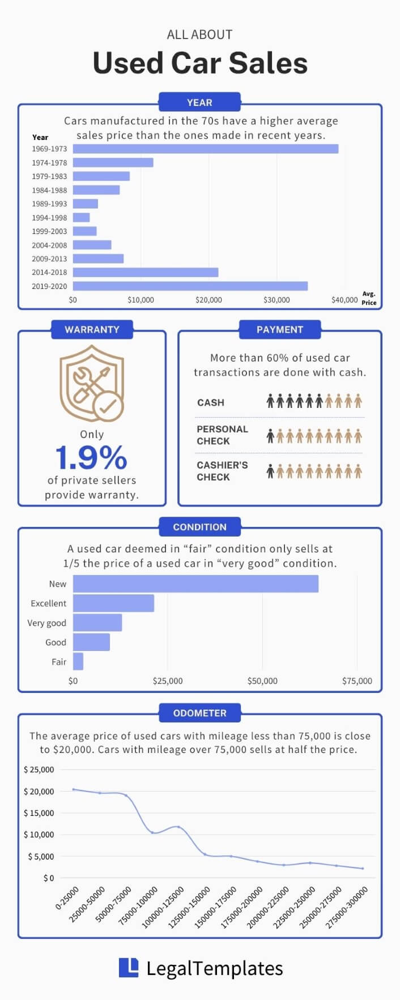

Buying a used car from a private seller is not as simple as buying an old bicycle from a garage sale: you don’t just hop in the car and drive away once you’ve paid.
The decision to not purchase through a dealership certainly gives you more control and often a better bargain, yet it comes with a cost, as the transaction procedures can be complex and confusing—especially for first-time car buyers. Due to unfamiliarity with the process, there is a chance that you might overlook crucial steps and even experience financial loss from poor decisions.
We’re here to shed some legal headlights if you want to buy a preowned vehicle. NyAi invited award-winning journalist Jaclyn Trop to provide expert tips that used-car buyers should consider before their purchase. Jaclyn writes extensively about automotive, and her substantial knowledge earned her a seat as a US juror at the World Car Awards.
Combined with insights from experienced attorneys and survey results from over 10,000 used-car buyers, we examined used car sales across the U.S. and addressed concerns buyers may have before, during, and after the transaction altogether.
Before Buying: Do Your Research
This is automotive expert Jaclyn Trop’s take on the importance of research before purchasing a used car. If you’re concerned about striking the wrong deal, don’t worry—we’ve done most of the research for you.
Step 1. Consider the Popular Options
Our survey results found clear popularity winners in the used car markets, including the Toyota Camry, the Chevrolet Silverado, and all-time Mr Popularity: the Ford F-150.
According to Jaclyn, these car models have been long-loved over the decades—and for two main reasons.
“Pickups are built for versatility – you can drive them off-road or down Main Street. You can drive them to dinner or to Home Depot. They’re also practical weekenders, able to haul boats and trailers.
Similarly, the Camry is long-beloved because it can fit anywhere – town or country. The affordable five-passenger sedan appeals to many drivers, from young professionals to small families to empty nesters.
Another reason full-size trucks have long dominated the US’s new and used car market is their amazing durability. In fact, if maintained well, all three models can clock up to 300,000 miles on the odometer without needing extreme repairs, which is why they hold their resale values over several years.”
Take a look at what car makes are popular in your state.
Step 2. Decide How You Want to Finance
Many financial institutions offer a private-party auto loan if there’s not enough cash.
However, it’s important to remember that some lenders restrict the type of vehicles they’ll finance, such as age or mileage. They may also charge a higher interest rate for older vehicles or those with much mileage. Therefore, how you decide to finance the purchase may very well affect your final choice of vehicle.
If your seller isn’t set up to accept payment from your preferred lender, ask the seller to consider working with a dealership on consignment. This way, you can finance with your chosen lender, and both you and the seller can enjoy extra protection and help with the paperwork.
Apart from financing with an institution, you can also choose to finance with the seller if you reach a mutual agreement. When receiving owner financing, make sure that:
- The title is clear, and there are no liens. There may be a due-on-sale clause on the seller’s loan; if the seller fails to pay off the loan upon your purchase, the seller’s lender may have the right to seize the car.
- You and the seller sign a promissory note. The promissory note must outline the important terms: the loan amount, the interest rate, the repayment terms, and what happens if you fail to make payments (in which case the seller usually has the right to seize the car).
Step 3. Check the Car Title
You cannot verify that the vehicle belongs to the seller without seeing the title. Always ask to examine the title of the car and be alert if:
- Someone co-owns the car with the seller. Two (or more) individuals can co-own a property in several ways. Both owners must sign the title if the names are joined with the conjunction “AND;” if the conjunction reads “OR,” either owner can sell the vehicle without the other person’s signature. In any case, it’s best to ask for the co-owners written acknowledgment with a signature. Walk away if the seller refuses to provide such a document—it may be possible that the co-owner is unaware of the sale.
- There’s a loan that hasn’t been paid off. Until the seller satisfies the car loan, the title is not cleared and therefore cannot be transferred to you. Moreover, the seller is generally prohibited from selling the vehicle without the lender’s permission. While it is not unusual for the seller to have an outstanding loan note on the car, purchasing a vehicle with a clear title is generally recommended.
- The title is lost or unavailable. The seller should obtain a copy of the title from the local DMV before attempting to sell it to you.
- The vehicle has a salvage title, has been rebuilt, or is simply a lemon.
You can also consider asking the seller to sign an affidavit of vehicle ownership to verify that the seller owns the vehicle and is not currently in bankruptcy proceedings.
Step 4. Ask for VIN
The VIN (Vehicle Identification Number) is a series of unique numbers used to identify a vehicle, and it plays an important role in your research before purchase.
Once the VIN of a vehicle is entered into a vehicle history data provider approved by the NMVTIS (National Motor Vehicle Title Information System), you can instantly retrieve “critical history about the car you are looking to buy.” Jaclyn highlighted three aspects of a VIN history report:
- Title records. You can see where the vehicle came from and how many title transactions there were. If the seller assures you they are the original owner, checking the VIN lets you verify their story.
- Title status. A vehicle with a clean title has no liens or issues. But if you see a salvage, lemon, or flood title, you could be stuck with costly repairs down the road.
- Vehicle history. Checking the VIN may reveal that the vehicle was in an accident, damaged, or stolen, which is critical to know before buying.
In addition, you can also learn about the vehicle’s fuel efficiency, safety rating, and other essential aspects of the vehicle that may affect your decision on the purchase. When inspecting the vehicle in person, make sure you also verify that the VIN you get from the seller matches the one printed on the actual vehicle.
There are no security concerns with disclosing the VIN as it is shared often and is easily visible on the vehicle. If your potential seller refuses to share the vehicle’s VIN, you might want to consider this transaction.
Step 5. Make Sure Your Seller Is Trustworthy
There is no denying that there are inherent risks in buying a car from a private seller. But you can minimize them by asking your seller questions—a lot of questions. Some of the most essential ones, according to Jaclyn, include:
Why did you decide to sell the car? A seller could be selling the vehicle for several reasons. Those with growing families may be looking for a bigger vehicle, while those with long commutes may want a car with better gas mileage. If the price seems too good, ask the seller about it. For example, the vehicle may require costly repairs that the seller can’t afford to make.
Who drove the car? What was the car mainly used for? Cars used for delivery services or long commutes accrue more wear and tear. Younger drivers may be harder on vehicles than older drivers.
Are there any maintenance records that you can inspect? Any recalls? Maintenance records show how well the seller took care of the vehicle you’re considering as your next ride. You can see how often the seller changed the oil, replaced filters, rotated the tires, and took the vehicle in for a tune-up. Note that maintenance records could expose issues that the seller isn’t sharing. For example, if you see frequent brake repairs, the vehicle may have a problem.
Is there any warranty remaining on the vehicle? Have previous owners made any modifications? Some modifications could void any remaining warranty coverage, and an improper installation could cost more to fix down the road.
Where was the vehicle stored? Cars kept in garages endure less weather exposure than those parked on the street or driveway.
Was the vehicle involved in any accidents or damaged in any way? An accident doesn’t automatically make a vehicle unsaleable, but you need to assess the damage to the vehicle. Ask the seller about the severity of the incident. If it was a minor accident, the vehicle may have endured nothing more than a few dents and scratched paint; however, a car that was undrivable afterward may be a red flag.
Answers to these questions should provide enough details for you to comprehensively evaluate the car’s condition and potential issues.
Apart from obtaining a solid background check, asking questions also allows you to identify curbstoners or unlicensed dealers disguised as private sellers. Curbstoners usually purchase wrecked vehicles and sell them to buyers privately to eliminate buyers’ rights to consumer protections and avoid taxes.
You may also request to see the seller’s identification (and even ask for a copy) to ensure that the seller’s name matches the name on the car title. While the seller isn’t required by law to do so and could say no, you, as the buyer also have the right to walk away if you feel like you can’t trust the situation.
Step 6. Inspect and Test Drive
Before you inspect the car in person, request service and maintenance records and accident reports from the seller. Combine the information with results on vehicle history check websites to prepare for the inspection in person.
During the inspection—ideally on a dry day—check every vehicle compartment from the inside out. Jaclyn details on steps to a thorough inspection.
“First, look around for any signs of obvious damage, such as scratches, rust, or dents. Check for gaps or misaligned panels. Open and shut all doors, the hood, and the trunk to make sure they close properly. If the doors feel loose, the car may have been through more than you know.
Then move on to the windshield and glass, inspecting for any cracks or chips. Pay attention to the tread on the tires, too. A relatively new car with low mileage will most likely have the original tires. If some or all of the tires have been replaced, it’s worth asking why.
Next, pop the hood to check the belts, hoses, and fluid levels. Look at the condition of the battery and radiator fluid. Peek under the car for any rust or obvious signs of damage.
Finally, inspect the interior, including the condition of the upholstery and the functionality of all the controls, from the air conditioning vents to the seat adjusters to the touch screens. Everything should be fully operational before you drive off with the car; otherwise, those problems become your responsibility. There may be water leaks if the car has a musty or moldy smell.
In addition to the inspection, Jaclyn also stresses the importance of a test drive when purchasing a used car.”
When test driving a vehicle, note whether you had trouble getting into or out of the driver’s seat. Adjust the seat and mirrors to ensure you can find the correct position.
As you drive, pay attention to the ride. How easy was it to steer and maneuver? Test the brakes to see how responsive they are and how quickly you can stop. See how quickly you can accelerate while merging onto the highway.
Be sure to test the climate control system to see if the air conditioning and heating work. Play around with the stereo and other electronics to check for any problems. As you drive, turn off the stereo so that you can see whether the cabin is quiet or noisy.”
To facilitate a vehicle title transfer in 9 states including California and Maryland, a safety/emissions inspection may be required when there is none currently on the record. If the car has been inspected recently for this purpose, request a copy of the vehicle inspection report from the seller and read it thoroughly.
It is important to note that a vehicle inspection report does not include mechanical issues. If you have doubts, ask the seller to have the car checked out by a licensed mechanic if they haven’t and provide you with a report. You can also find a trusted mechanic to perform an independent mechanical inspection on your own. [1]
If you purchase a vehicle from out of state, you may be required to perform vehicle inspections at certified inspection stations in your home state for an emissions test, a safety inspection, or both.
Step 7. Negotiate the Terms
After you decide on a particular vehicle, it’s time to work out the sale details. This includes (but is not limited to):
-
Price. Use details of the vehicle to your advantage in the negotiation. Our survey shows:
- Used cars produced from 1989-1998 only sell for an average price of $2,784.58. This doesn’t necessarily mean that the older the car is, the cheaper the price will be. Cars manufactured in the 70s are sold at prices very close to the ones of 2020.
- The average price of a used car with mileage less than 75,000 is close to $20,000. However, that number halves once the 75,000 thresholds is passed.
- A used car deemed in “fair” condition only sells at one-fifth the price of a used car in “very good” condition.
- Warranty. Some private sellers offer an express engine warranty or a 7-day money-back guarantee out of goodwill. While sellers who offer warranty only account for less than 2% in our survey, they exist, and it doesn’t hurt to ask. If no warranty is stated on the bill of sale or the purchase agreement, the vehicle is considered to be purchased “as is.” This means that you agree to accept the vehicle exactly as it is, and the seller bears no liability for any vehicle defects once the purchase is complete.
- Payment method. More than 60% of sellers prefer to receive payment in cash. If this is the case with your seller, make sure you and the seller sign a receipt to keep as proof that the payment has been completed.
- Delivery method. Decide whether you’d like your seller to park the car on your property where you can legally keep it or have the car picked up by a tow truck.

Step 8. Put Everything Down in Black and White
A mere bill of sale won’t cover everything. You and the seller are advised to document the terms and conditions agreed upon in a simple purchase agreement to prevent future disputes. If it seems unnecessary to you, think again: You’d sign a contract if you were buying a car from a car dealer. So why wouldn’t you sign an agreement if you are buying a car from an individual?
In addition to a purchase agreement, remember to keep all exchanges of messages and/or emails between you and the seller (which includes the sales ad you saw in the first place).
The Transfer: Be Excited, But Also Be Alert
Step 9. Take Ownership
The seller should sign the car title so you can apply for a transfer. Note that some states require the title signatures to be notarized to be considered valid (and even in those that don’t, it is still a good idea to do so).
In the case that there are liens on the car, you can still take possession of the vehicle after the bill of sale is signed while waiting for the title to clear. If possible, you can also provide a separate check or money order to the lienholder directly for the payoff amount and pay the seller the difference. Either way, the seller has to pay off any balance first in order to transfer ownership to you.
The seller should also file a notice of transfer to their local DMV (if applicable) and call the insurance company to inform them of the change and initiate the transfer of liability to you. This is because the names on the car title and insurance documents must be the same in order for the policy to remain valid.
When choosing your insurance plan, ensure you meet your state’s minimum insurance requirements. Some insurance companies require a specific carrier to be assigned to a specific car.
Step 10. Review the Paperwork and the Requirements Before You Sign
Make sure you have the following with you before making your way to the DMV:
- A valid ID
- All documents required by the DMV (which varies from state to state)
- A bill of sale (which is required by most states for registration)
- Proof of insurance
- Proof of inspection (if applicable)
- The car title signed by both you and the seller
You can complete the title transfer and registration process in one go. Some states offer online appointments or online applications for convenience. Review everything to ensure all document details—such as the vehicle specifications and the odometer reading—are recorded correctly before you submit them.
You should also check your state requirements regarding notarizing the bill of sale. Some states, such as Maryland and West Virginia, require the bill of sale to be notarized when certain conditions of the transaction or the vehicle are met.
Surprisingly, survey results show that more than 70% of sellers and buyers whose transactions met the conditions in these states did NOT include a notary acknowledgment in their bills of sale despite the requirements.
Considering that notarization is generally recommended anyway, and the requirements could get confusing at times, you might as well get your bill of sale notarized for enhanced legal credibility, required or not.
If the purchase is out-of-state, follow your (the buyer’s) state requirements, as the vehicle will eventually be registered in your state.
Although recommended, the seller doesn’t need to be present at the DMV if the seller provides you with all the required documents to facilitate the transfer.
Check the table below to find out the required documents for your state, and within how many days you are required to apply for title transfer and/or registration after your purchase:
Title Transfer and Registration Requirements by State
Step 11. Bring Enough Money.
As the buyer, you may have to pay the following fees depending on state and county requirements:
- Sales tax. Whether you buy a car from out of state or not, you’ll have to pay sales tax to your home state (if sales tax is required in the state) in which you will register the car. Unless negotiated otherwise, the buyer is usually the one required to pay state and local taxes after completing the sale; however, if the seller profits from the sale (e.g. purchasing the vehicle for $1,000 but selling it for $3,000), the seller will need to pay taxes on the profit as well (as the IRS will consider the profit as a capital gain). Check with your local DMV for more information.
- Title application fees.
- Registration fees.
- Administration and document fees.
- Other applicable fees.
After Buying: Once You Drive The Car Back Home
What If It’s Broken After Purchase?
Despite all efforts made before purchase, there is always a chance of discovering defects and malfunctions afterward. But can you take legal action against the seller if you suspect dishonesty?
- If the sale is on an “as is” basis – The buyer generally has no legal rights to demand repair or refund from the seller in the case of an “as is” sale because you have acknowledged the sale being “as is” by signing the document. There are exceptions to this, however, which will be addressed below.
- If the seller makes promises – According to Uniform Commercial Code (UCC), if the promise the seller made about the vehicle becomes “part of the basis of the bargain”, it could be considered an implied warranty that the buyer can enforce even if the words “warranty” or “guarantee” were not used. In other words, even if there is an “as is” statement on your bill of sale, it may not be considered valid if the seller made a promise about the car’s condition, and that promise was one of the reasons for your purchase.
- If the seller provides a warranty but refuses to honor it – Failure to execute the written warranty as promised is considered a breach of contract, and the buyer can seek any legal remedy available.
What About Lemon Laws?
Under lemon laws, consumers who buy a car with a major mechanical defect can get a refund or replacement. Unfortunately, lemon laws do not protect buyers who purchase used cars from private sellers. Lemon laws vary by state, and not every state covers used cars in its lemon law; even in those that do, only transactions made with licensed car dealers are covered.
What About Cooling-off Period?
You might have heard of the Cooling-off Rule by the Federal Trade Commission (FTC) stating that consumers have the right to cancel certain sales for a refund in three days. Nevertheless, private automobile sales are not covered by this rule. [2]
Get Yourself in the Driving Seat
Facilitating the purchase of a used car from a private seller seems complex and requires a substantial amount of time and effort. After all, it’s just you and the seller–the paperwork doesn’t fill out itself.
But now you’ve got it all figured out—you know all the steps, it’s okay to ask for the seller’s ID, and you know that lemon laws (disappointingly) do not cover used cars purchased from private sellers.
But what’s most important: you know exactly how to protect your rights as a used car buyer because you have the right legal knowledge. You may not have an experienced dealer to handle the process, but that doesn’t mean you’ll have to deal with it alone. Create your bill of sale with us today just like thousands of used car sellers and buyers do.
Methodology
NyAi surveyed over 10,000 used car buyers and sellers to capture insights into their experience with the used car market in the U.S. Irrelevant responses or significant outliers were excluded from the analysis. The data was captured from July 1, 2021, to June 30, 2022, across all US states. Our unique user research combined with a deep understanding of the legal space allows us to support people make legal decisions more easily.